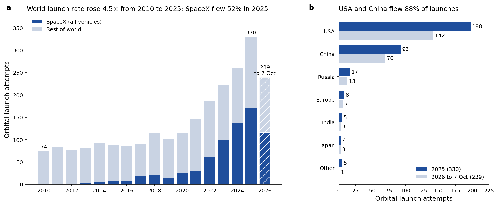
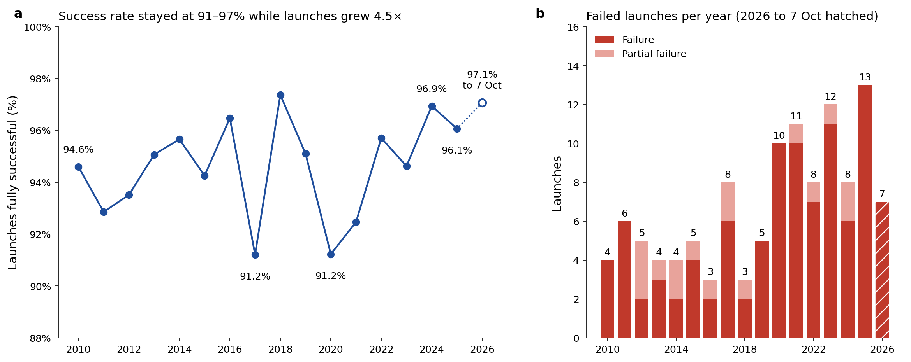

Orbital launches per year since 2010
World orbital launch attempts rose from 74 in 2010 to 330 in 2025, and reached 239 by 7 October 2026. SpaceX flew 170 of the 2025 launches. The share that fully succeeded stayed between 91% and 97% in every full year: 94.6% in 2010, 96.1% in 2025 and 97.1% so far in 2026. Counts come from Wikipedia's yearly spaceflight summaries and include Starship flight tests.

| Year | Orbital launches | Successes | Failures | Partial failures | Fully successful | SpaceX | Everyone else |
|---|---|---|---|---|---|---|---|
| 2010 | 74 | 70 | 4 | 0 | 94.6% | 2 | 72 |
| 2011 | 84 | 78 | 6 | 0 | 92.9% | 0 | 84 |
| 2012 | 77 | 72 | 2 | 3 | 93.5% | 2 | 75 |
| 2013 | 81 | 77 | 3 | 1 | 95.1% | 3 | 78 |
| 2014 | 92 | 88 | 2 | 2 | 95.7% | 6 | 86 |
| 2015 | 87 | 82 | 4 | 1 | 94.3% | 7 | 80 |
| 2016 | 85 | 82 | 2 | 1 | 96.5% | 8 | 77 |
| 2017 | 91 | 83 | 6 | 2 | 91.2% | 18 | 73 |
| 2018 | 114 | 111 | 2 | 1 | 97.4% | 21 | 93 |
| 2019 | 102 | 97 | 5 | 0 | 95.1% | 13 | 89 |
| 2020 | 114 | 104 | 10 | 0 | 91.2% | 26 | 88 |
| 2021 | 146 | 135 | 10 | 1 | 92.5% | 31 | 115 |
| 2022 | 186 | 178 | 7 | 1 | 95.7% | 61 | 125 |
| 2023 | 223 | 211 | 11 | 1 | 94.6% | 98 | 125 |
| 2024 | 261 | 253 | 6 | 2 | 96.9% | 138 | 123 |
| 2025 | 330 | 317 | 13 | 0 | 96.1% | 170 | 160 |
| 2026 (to 7 Oct) | 239 | 232 | 7 | 0 | 97.1% | 116 | 123 |

Launches by country
The USA and China flew 89% of the world's orbital launches in 2026 to date, about the same as in 2025 (88%).
| Country or bloc | 2025 | 2026 to 7 Oct |
|---|---|---|
| USA | 198 | 142 |
| China | 93 | 70 |
| Russia | 17 | 13 |
| Europe | 8 | 7 |
| India | 5 | 3 |
| Japan | 4 | 3 |
| Other | 5 | 1 |
Launches by provider and rocket
Launch counts, reuse and current status for 20 launch providers and agencies.
| Organization | Country | Vehicle | 2025 | 2026 to date | Reuse | Status |
|---|---|---|---|---|---|---|
| SpaceX | USA | Falcon 9 / Falcon Heavy | 165 (Falcon 9) | 110 Falcon 9 + 3 Falcon Heavy | Booster+fairing reused (F9) | Operational; >50% of world launches |
| SpaceX | USA | Starship / Super Heavy | 5 suborbital test flights | Flights 12-13 suborbital; Flight 14 (28 Sep) first orbital + first commercial (26 Starlink V3) | Fully reusable design; booster catches demonstrated; first orbital flight 28 Sep 2026 | Flight test; first orbital flight achieved Sep 2026 |
| NASA | USA | SLS (Space Launch System) | 0 | 1 (Artemis II, crewed lunar flyby, 1-11 Apr) | Expendable | Operational; Artemis III re-scoped to LEO demo (late 2027), first landing moved to Artemis IV (2028) |
| Blue Origin | USA | New Glenn | 2 (New Glenn) | 1 (NG-3, payload in wrong orbit, 19 Apr) | First stage reflown (NG-3, 19 Apr 2026) | Grounded: vehicle exploded on LC-36 during static fire, 28 May 2026 |
| Blue Origin | USA | New Shepard | suborbital only | suborbital only | Fully reusable | New Shepard paused for at least two years (announced 30 Jan 2026) |
| ULA | USA | Vulcan Centaur | 6 (5 Atlas V + 1 Vulcan) | 5 (4 Atlas V + 1 Vulcan) | Expendable (SMART reuse planned) | Operational |
| Rocket Lab | USA/NZ | Electron | 18 (Electron) | 15 (Electron) | Booster recovery attempts | Operational |
| Rocket Lab | USA/NZ | Neutron | 0 | 0 | Reusable first stage | In development (Neutron not yet flown) |
| Arianespace/ESA | Europe | Ariane 6 | 7 (4 Ariane 6 + 3 Vega-C) | 6 (4 Ariane 6 + 2 Vega-C) | Expendable | Operational; Ariane 64 debut 12 Feb 2026 |
| ESA | Europe | (via Ariane/Vega) | N/A (uses Ariane/Vega) | N/A (procures Ariane/Vega) | Studying reuse (Themis/Prometheus) | Operational programs |
| Roscosmos | Russia | Soyuz-2 / Angara | 17 | 13 | Expendable | Operational |
| CNSA | China | Long March 5 / 5B | 93 (all Chinese launches, 3 failed) | 70 (all Chinese launches, 4 failed) | Expendable | Operational |
| CNSA | China | Long March 9 | 0 | 0 | Reusable (planned) | In development (super-heavy; not yet flown) |
| CASC / CNSA | China | Long March 10 / 10A / 10B | 0 | 1 (Long March 10B maiden flight, 10 Jul) | First stage recovered at sea (10B, 10 Jul 2026) | Long March 10A + Mengzhou uncrewed orbital test planned late 2026/2027; abort test 11 Feb 2026 |
| CASC/CASIC + startups | China | Zhuque-3, Tianlong-3, others | included in China's 93 | included in China's 70; Zhuque-3 booster recovered 18 Aug | Zhuque-3 booster recovered (18 Aug 2026) | Early flight; two Chinese vehicles have now recovered orbital boosters |
| ISRO | India | LVM3 (GSLV Mk III) | 2 (LVM3) | 0 (LVM3); human-rated HLVM3 Gaganyaan G1 planned Nov 2026 | Expendable | Operational |
| ISRO | India | PSLV | 1 (PSLV-C61, failed) | 1 (PSLV-C62, failed); next flight C63 planned Nov 2026 | Expendable | Not flown since Jan 2026 failure |
| JAXA | Japan | H3 | 4 (3 H3 + 1 H-IIA) | 2 (H3) | Expendable | Operational; H3 returned to flight Jun 2026 |
| Firefly Aerospace | USA | Alpha / MLV | 1 (Alpha, failed) | 1 (Alpha, success, 12 Mar) | Expendable (MLV reuse studies) | Operational; final Block I flown |
| Relativity Space | USA | Terran R | 0 | 0 | Reusable first stage | In development (Terran R not yet flown) |
Search and filter this data
Every record on this page is also in an open dataset you can search, filter and sort.